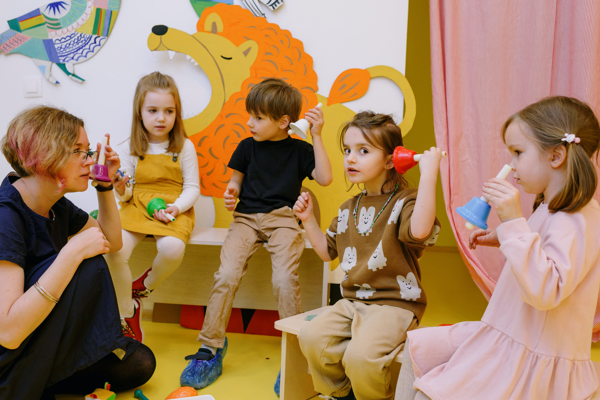
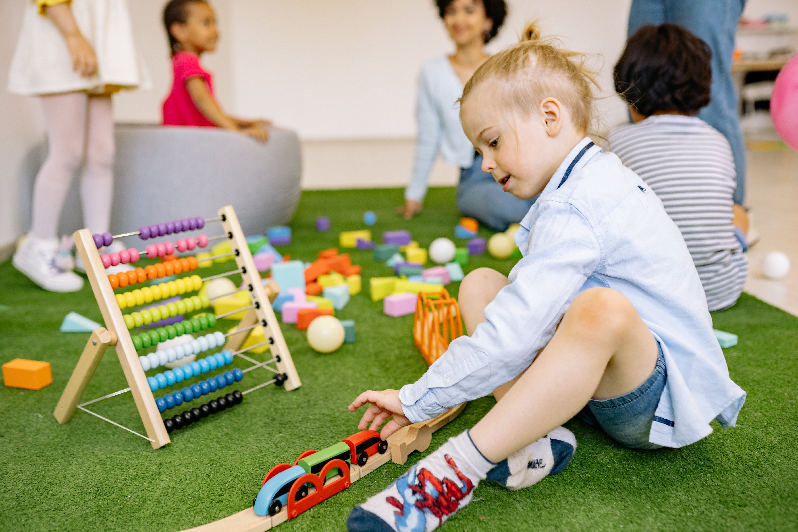
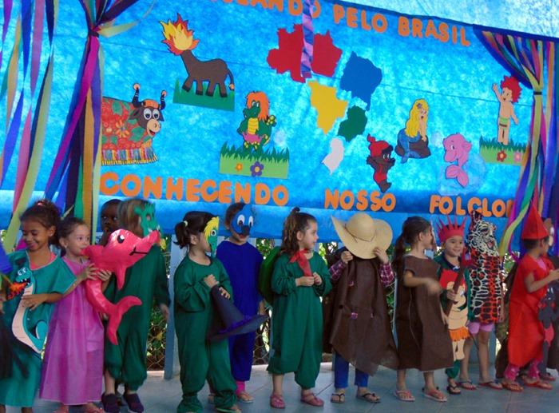

First Panel
This is your first panel

Second Panel
This is your second panel

Third Panel
This is your third panel

Fourth Panel
This is your fourth panel
A UniKids nasceu com um propósito apaixonante: oferecer uma educação excepcional que capacita os alunos a explorarem todo o seu potencial, transformando-os em cidadãos ativos e conscientes da comunidade global. Desde o nosso início, mantemos um compromisso inabalável com valores fundamentais, como Excelência Acadêmica, Desenvolvimento Integral, Inclusão e Diversidade, Envolvimento Comunitário e Preparação para o Futuro.
Movidos pela paixão e visão, continuamos trilhando esse caminho com entusiasmo e dedicação. Na UniKids, nossa missão é inspirar, educar e capacitar os alunos, guiando-os para se tornarem líderes responsáveis e contribuintes ativos em nossa sociedade. Convidamos você a fazer parte desta incrível jornada de aprendizado, crescimento e conquistas.
This is your first panel
This is your second panel
This is your third panel
This is your fourth panel
 Dia das mães UNIKIDS
Dia das mães UNIKIDS
No Unikids, celebramos o Dia das Mães com um carinho especial. Em um ambiente acolhedor e cheio de amor, as mães são honradas com atividades encantadoras preparadas pelos alunos. Desde apresentações carinhosas até pequenos gestos de gratidão, o Dia das Mães na Unikids é um momento emocionante de celebração e reconhecimento, fortalecendo os laços familiares e destacando a importância do apoio maternal em nossa comunidade educacional.
 Encontro entre professores e alunos
Encontro entre professores e alunos
Na Unikids, o Encontro entre Professores e Alunos é mais do que uma reunião acadêmica; é um momento de conexão única. Professores e alunos se encontram para compartilhar experiências, explorar ideias e fortalecer laços. Esse encontro especial na Unikids é um espaço onde a aprendizagem transcende as salas de aula, transformando-se em uma jornada de descoberta conjunta, criando uma comunidade educacional unida e inspiradora.
Na Unikids, o Dia do Folclore é um momento mágico em que os alunos mergulham nas tradições culturais, explorando contos encantadores e lendas fascinantes. Com atividades divertidas e interativas, celebramos a riqueza do folclore, proporcionando aos alunos uma experiência educativa única. No Dia do Folclore na Unikids, a imaginação floresce, fortalecendo o apreço pelas nossas raízes culturais e criando memórias duradouras.
 Dia do índio
Dia do índio
Na Unikids, o Dia do Índio é celebrado com respeito e aprendizado. Os alunos mergulham na riqueza da cultura indígena, explorando tradições, artesanato e histórias autênticas. Com atividades envolventes, honramos a diversidade cultural, promovendo a compreensão e o apreço pelas contribuições dos povos indígenas. O Dia do Índio na Unikids é um momento de reflexão e celebração, destacando a importância da preservação e valorização da herança indígena.
Unikids: Onde o Aprendizado é uma Aventura Criativa
Bem-vindo à Unikids, uma escola única onde a aprendizagem se transforma em uma emocionante jornada criativa. Localizada em um ambiente acolhedor e inovador, a Unikids tem como missão cultivar mentes curiosas e promover o desenvolvimento integral de cada aluno.
Ambiente Inspirador:
Nossa escola foi projetada para inspirar a imaginação e a criatividade. Com salas de aula coloridas e espaços abertos, os Unikids têm o privilégio de explorar um ambiente que estimula o aprendizado por meio da descoberta. Cada canto da escola foi cuidadosamente planejado para criar um ambiente propício à exploração e à expressão individual.
Abordagem Pedagógica Inovadora:
Na Unikids, acreditamos que cada criança é única, e nossa abordagem pedagógica reflete esse princípio. Integrando métodos tradicionais com abordagens modernas, nossos educadores estão comprometidos em nutrir o potencial único de cada aluno. A aprendizagem é personalizada, promovendo o desenvolvimento acadêmico, emocional e social.
Programa Curricular Dinâmico:
O currículo da Unikids é projetado para ir além dos livros didáticos. Incorporamos atividades práticas, projetos colaborativos e experiências de aprendizado interativas. Os Unikids participam de atividades que vão desde experimentos científicos até projetos de arte, garantindo que o aprendizado seja envolvente e significativo.
Fomentando a Criatividade:
Na Unikids, a criatividade é valorizada e incentivada. Oferecemos aulas de música, teatro, artes visuais e outras atividades que nutrem a expressão artística dos nossos alunos. Acreditamos que a criatividade é essencial para o pensamento inovador e para a construção de um futuro brilhante.
Comunidade Envolvente:
A Unikids não é apenas uma escola; é uma comunidade. Pais, professores e alunos colaboram para criar um ambiente de apoio e colaboração. Promovemos eventos regulares, reuniões de pais e atividades extracurriculares que fortalecem os laços entre os membros da nossa comunidade.
Na Unikids, a aprendizagem é uma jornada emocionante e única. Estamos comprometidos em preparar os Unikids para enfrentar os desafios do futuro com confiança, criatividade e uma paixão contínua pelo conhecimento. Junte-se a nós nesta aventura educacional extraordinária!